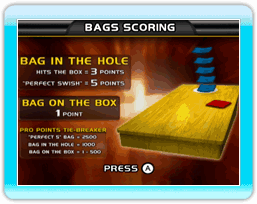
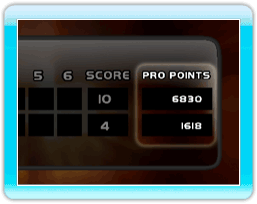
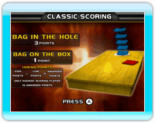

13 |
Scoring |
 |
Target Toss Pro: Bags uses the traditional scoring rules from the real game of "Bags" or "Cornhole" with a twist. The objective is to get the most points by throwing bags onto the box or into the hole while preventing your opponent from doing the same.  In a Bags game each player gets 4 bag throws per inning, with 6 innings making up a game. The winner is the one with the most points at the end.
 The ultimate tie breaker, Pro Points are awarded by measuring the distance of each bag from the hole, assigning a point value, and adding those points together. When scores are tied the game will use Pro Points to decide the winner. Note: Pro Points are only used in "Bags" scoring.  Classic cornhole scoring pits two players or two teams against one another for as many innings as needed until one of the players reaches 21 (or another pre-determined score).
|
 |
 |
 |